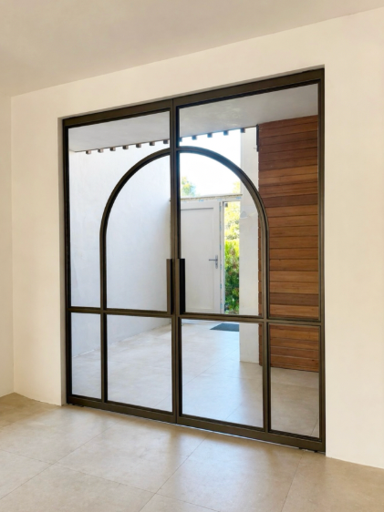
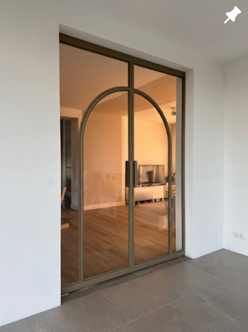
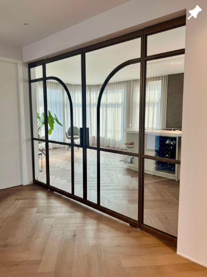
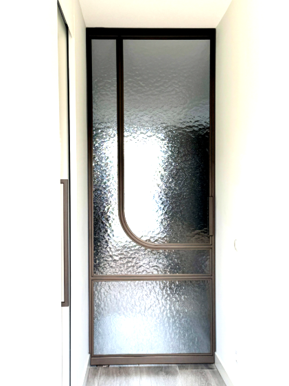
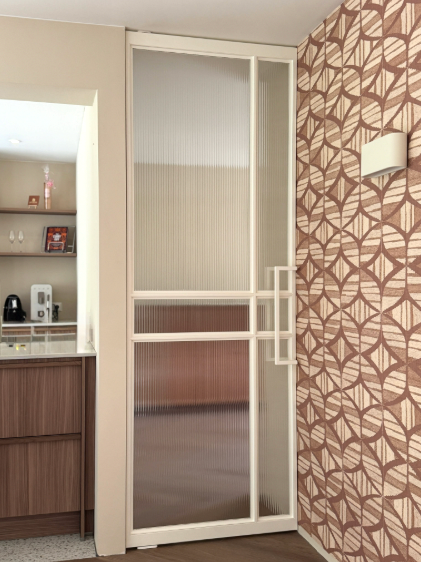
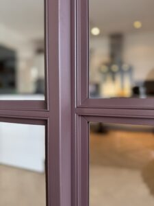

Onze meest gekozen deur: één vast stalen kader, één beweegbaar vlak, en een groot aantal beslissingen die samen bepalen hoe hij eruitziet en aanvoelt.
De enkele deur is onze meest gekozen oplossing: als voordeur, als binnendeur tussen twee ruimtes, of als toegang tot een serre of tuinkamer. Eén stalen kader, één vlak van staal en glas, volledig op maat van uw opening.
Wat de deur uiteindelijk wordt, bepaalt u zelf. Op deze pagina lopen we de belangrijkste keuzes met u door — hoe de deur beweegt, welke kleur hij krijgt, welk glas erin komt en welke greep u bedient. Afmetingen bepaalt u later, samen met ons of straks zelf in de configurator.
Bij een enkele deur kiest u uit drie bedieningswijzen.
De deur draait om een verzonken as, los van het kozijn. Geeft een zwevend effect en is geschikt voor grotere, zwaardere vlakken.
Klassieke bediening op verzonken scharnieren aan het kozijn. De vertrouwde manier, strak uitgevoerd in staal.
Loopt geluidloos langs een verzonken rail. Geen zwaaiende deur nodig — ideaal wanneer ruimte naast de opening beperkt is.
Past de deur niet precies in de opening, dan vullen we het verschil met een vast paneel — links, rechts, of aan beide zijden.



Het aantal horizontale liggers en verticale staanders bepaalt hoe het glas in de deur wordt opgedeeld — van rustig en open tot fijn geraamd.


Standaard leveren we in mat zwart. Wilt u iets specifieker, dan kiest u uit onze kleurencatalogus met designkleuren — elke kleur wordt per project gemengd en met de hand gespoten.

En vele andere kleuren op aanvraag — we adviseren u graag bij de keuze.
Van volledig doorzicht tot een vlak dat vooral licht doorlaat. Al ons glas is veiligheidsglas.
Volledig doorzicht, de standaardkeuze bij open doorgangen.
Vermindert doorzicht en weerkaatsing, warmere of koelere gloed naar keuze.
Gestructureerd glas dat licht doorlaat en vervormd doorzicht geeft — privacy zonder een dichte deur.
Elke greep wordt in dezelfde afwerking als het kader geleverd.
Verzonken in de hoek van het profiel, nauwelijks zichtbaar in gesloten stand.
Een ronde, opgelegde greep — goed grijpbaar, een duidelijker accent op de deur.
Een verticale stang over (bijna) de volledige hoogte, voor een architectonisch statement.
Tot die tijd stellen we uw deur graag met u samen in een persoonlijk gesprek.